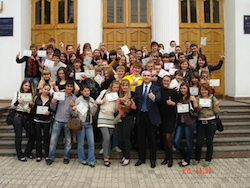
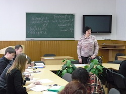

Центр довузівської підготовки
Директор центру
Ігор Анатолійович
ГЕРАСИМЕНКО
Центр довузівської підготовки (у подальшому ЦДП) є організаційним, навчальним та профорієнтаційним структурним підрозділом Донецького державного університету управління із обсягом набору на навчання 800 осіб (ліцензія Міністерства освіти і науки України № 552610 від 21.09.2010 р.)
ЦДП є базовою профорієнтаційною структурою університету, де проходять підготовку і стають студентами денної форми навчання щорічно до 80% випускників, що складає 20-25% набору першого курсу.
Вся діяльність центру будується на основі Концепції системи профорієнтаційної роботи ДонДУУ, Положення про ЦДП, Програми формування контингенту слухачів і регулюється наказами ректора про зарахування до центру, організації навчально-виховного процесу, а також рекомендаціями ректорату, навчально-методичної, вченої рад університету.
Метою діяльності ЦДП є підвищення якості знань випускників шкіл, проведення профорієнтаційної роботи з пошуку та залученню до університету обдарованої молоді, надання слухачам первинних знань та практичних навичок у сфері економіки, фінансів, менеджменту, права та соціології, забезпечення цільової підготовки до вступу в університет найкращих слухачів.
Основні принципи, структура та організація діяльності ЦДП:
- чітко визначена діяльність профорієнтації, що дає можливість слухачам без особливих сумнівів обрати спеціальність під час вступу до університету.
- надання слухачам первинних знань в області ринкової економіки, менеджменту, маркетингу, фінансів, права, соціології.
- залучання учнів зі спеціалізованих шкіл, ліцеїв, коледжів, гімназій і відбір слухачів з чітко вираженими комунікативними і організаційними здібностями.

З моменту свого створення ЦДП працює у напрямі збільшення обсягів своєї діяльності як у кількісному плані (значно збільшилося число слухачів), так і в якісному (збільшилася кількість навчальних структур і курсів, які пропонуються школярам і майбутнім абітурієнтам). На теперішній час, до складу ЦДП входять:
а) школа економіки та менеджменту (ШЕМ) для учнів 11 класів;
б) школа юного соціолога (ШЮС) для учнів 11 класів;
в) школа юного правознавця (ШЮП) для учнів 11 класів;
г) шести-, п'яти-, трьохмісячні підготовчі та консультативні курси для усіх бажаючих.
У ЦДП діє секція економіки Донецького територіального відділення МАН школярів, а також можуть створюватися школи (курси) лідерів, самодіяльні молодіжні об«єднання, творчі, наукові, художні, спортивні та інші групи (секції, центри, відділення тощо).
Вступники до центру надають документи:
• заяву на ім’я директора центру;
• копію табеля за попередній рік навчання;
• 2 фотокартки розміром 3х4 см;
• копії грамот та дипломів про участь у змаганнях, конкурсах, олімпіадах тощо;
• довідку про стан здоров’я
Зарахування до центру здійснюється після надання зазначених документів, проходження тестування та оформлення договору на навчання.
При зарахуванні слухачів до центру враховується стан здоров’я, інтелектуальна та фізична можливість відвідування занять за додатковою (позашкільною) програмою.
Якість викладання курсів з загальноосвітніх дисциплін — математики, української мови та літератури, історії України, географії — здійснюється на основі виданих колективами кафедр підручників, навчально-методичних посібників, з урахуванням вимог програми для вступників і недоліків шкільного викладання. Апробація навчально-методичних матеріалів здійснюється перш за все у центрі довузівської підготовки.
Останнім часом ефективною формою роботи зі слухачами є створення відеоуроків. Це не тільки зацікавлює і дисциплінує слухачів, але і надихає на пошуково-творчу діяльність, оскільки це вже не просто урок, а маленька історична пам'ятка, до якої завжди можна звернутися.
Основні завдання наукової діяльності центру полягають у напрямі вдосконалення форм і методів профорієнтації, вирішення проблем економічної освіти школярів, довузівських форм підготовки. Викладачі, які працюють у центрі, беруть участь у наукових конференціях, семінарах, у конкурсі навчальних програм для школярів з дисциплін економічного, управлінського циклу.
Останніми роками значно пожвавилися зовнішні зв'язки центру. У співробітництві з відділом зовнішніх зв'язків ДонДУУ, директорат центру запрошує для зустрічей із слухачами викладачів американського Корпусу Миру і представників Вищої школи бізнесу м. Комп'єн (Франція), студентів і професорів з Великобританії, ФРН, Польщі, Чехії та інших країн. Співробітники центру беруть участь в регіональних і всеукраїнських конференціях з питань освіти, налагоджені зв'язки з центрами профорієнтації районів м. Донецька і Донецької області при відповідних службах зайнятості населення і з Центром підготовки абітурієнтів м. Донецька. Традиційною стала участь співробітників центру в проведенні Ярмарок професій і Днів відкритих дверей не тільки в стінах університету, але й за його межами.
В рамках проведення олімпіад, конференцій слухачів центру директорат постійно працює з обласними центрами науково-технічної творчості молоді, загальноосвітніми школами і школами нового типу — ліцеями, гімназіями, колежами.
Центр довузівської підготовки — візитна картка Донецького державного університету управління. Саме тут майбутні студенти отримують перші уявлення про професії менеджера і підприємця, про специфіку їх роботи в умовах ринкової економіки; саме тут формуються первинні знання і практичні навички у сфері економіки і менеджменту, а також ведеться підготовка до активної навчальної і творчої діяльності в стінах ДонДУУ.